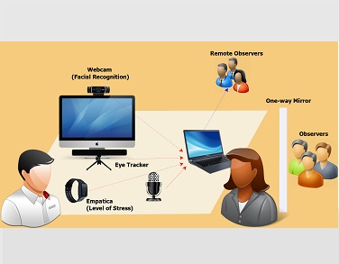
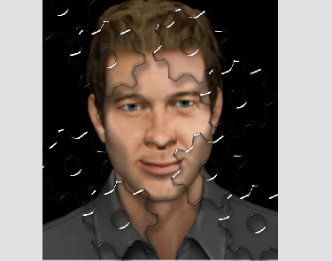
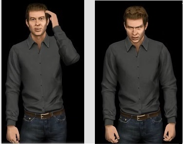

-

User Exprience Research
Designing and leading several studies where creating innovative approaches by utlizing different methods (e.g.remote/in-lab usability studies, user interviews, A/B testing, tree testing, contextual inquiry, and ethnography) and tools (e.g. eye tracker, empatica, and emotion recognition software packages.)
read more -

Interactive Virtual Human
A novel cognitive architecture to simulate human-like behavior, useful for generating meaningful, customized impressions & facilitating an enjoyable interaction with virtual humans.
read more -

A scenario for nonverbal interaction
Two easy-to-learn and engaging scenario that provoke high emotional exchange, an interactive environment and minimum dialog: Minesweeper and Rock/Paper/Scissors game
read more -

Emotion Modeling, From Stimulation to Expression
A model for simulating emotional pleasure and excitement changes when receiving positive and negative stimuli useful in understanding individuals’ emotional responses to environment/products.
read more -

Personality Modeling and Behavior Manifestation
To perceive virtual humans as natural and believable, it is crucial that they show consistent facial expressions, gaze behaviour, gestures, and postures (described by psychology as personality) which are recognizable by users. Achieving this level of believable expressive realism on a computer based real-time and responsive 3D character is still a source of ongoing research.
read more